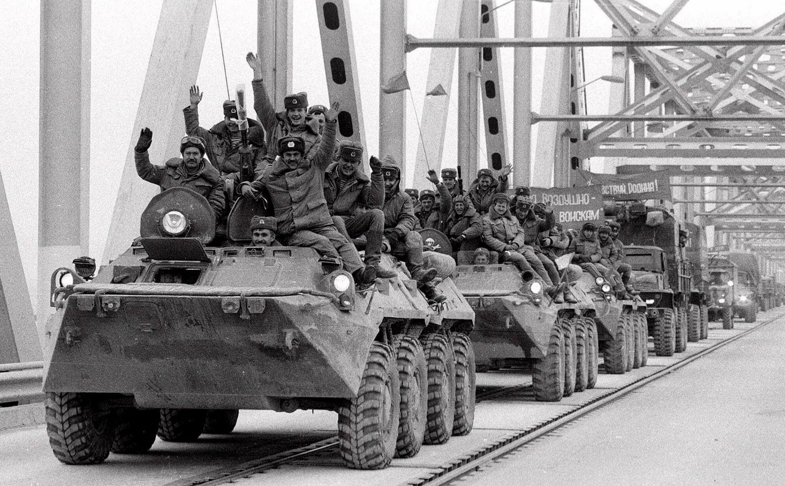
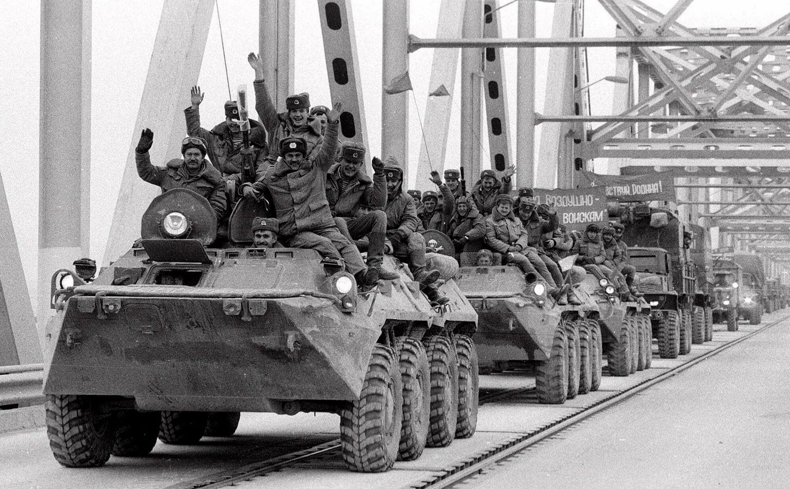

Интервью с Любовью Борисовной (бабушкой Влада) о периоде перестройки:
-Здравствуйте, Любовь Борисовна. Я хотел бы поговорить с вами о периоде перестройки под руководством Михаила Горбачева. Вам что-то запомнилось особенное из тех времен?
-Здравствуй, молодой человек! Конечно, многое запомнилось, много что вводили нового, меняли, чтобы улучшить жизнь. Лично мне запомнилась алкогольная кампания от Горбачева, так как, когда он стал Генсеком, то вроде это первое, что он начал проводить.
-Действительно? Расскажете подробнее, пожалуйста. Тогда мы расскажем об этом событии на нашем сайте про годы перестройки.
-Хорошо, в те годы у Горбачева была активная кампания по борьбе с пьянством. Он ввел ограничения на продажу и потребление алкоголя, что вызвало серьезное недовольство среди населения, да и здесь в Перми все были недовольны этим сильно. Вообщем, резко рухнул "сухой закон" на всех. Также всех призывали к здоровому образу жизни. Кстати тогда даже вырубили виноградники, помню об этом многие говорили.
-Можете ли рассказать о последствиях этой кампании? И лично о том, как она повлияла на вас, ваше окружение.
-Конечно. Резко стало заметно, что спирт убавился в магазинах, некоторые магазины и точки продаж алкогольных напитков позакрывались, видимо, весь доход был на спиртном. Да и в целом, думаю не только здесь, а по всей стране это сильно повлияло на доход магазинов, да и на бюджет всей страны. Но вроде алкоголь убирали, а всё равно много было пьяниц, да и в моём окружении я не увидела, что на нас эта кампания как-то повлияла. Опять же, как я говорила везде говорили про здоровый образ жизни, но при этом как будто всех всё равно манил спирт. Многие стали заниматься самогоноварением, как-то всё равно, несмотря на дефицит, алкоголь можно был достать, если в окружении кто-то самогон делал.
-А в магазинах совсем убирали спирт, или можно было купить?
-Конечно, можно было купить, но тогда простоял бы ты в очереди, кстати это и вызывало недовольство здесь на районе, да и по всей стране, просто это не освещали. Говорили только, что надо бороться с алкоголем и всё
-Какие изменения произошли в обществе в результате этой кампании?
-Как понимаешь алкоголизм и пьянство эта кампания не убрала, даже наоборот, многие научились варить, да и везде было это недовольство, хотя всё равно все пили! Возможно, где -то в стране люди поменяли мышление, но я думаю, что нет. Помню надо было получать что-то вроде разрешения, чтобы на свадьбе был алкоголь.
-Спасибо за вашу историю, мы тогда сейчас это аудио в текст переделаем и на сайт опубликуем.
-Молодёжь, обращайся. Не пейте!

 
